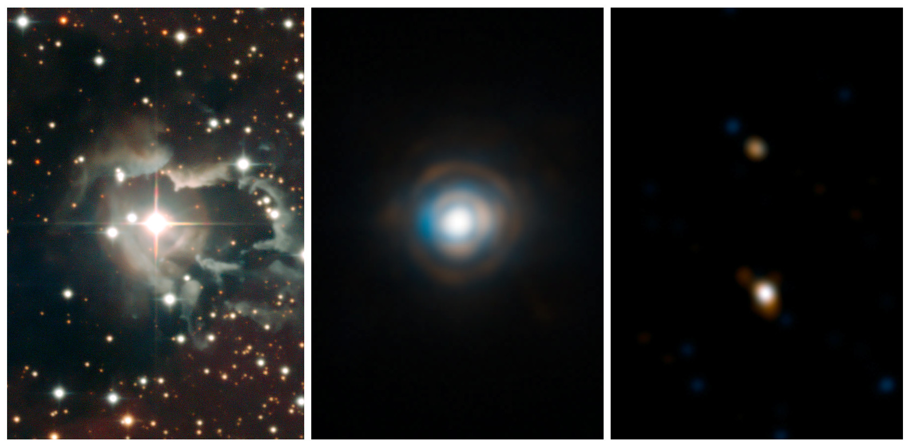

Akshat S. Chaturvedi
Graduate Research Assistant
Georgia State University
Research Focus
Georgia State University
My primary research interests currently lie in finding the missing link of massive binary star evolution. These massive binaries are the most likely progenitors of hydrogen-deficient supernovae, Be X-ray binaries, double-compact-object binaries, and consequently, future gravitational wave sources. The following video illustrates the current model of massive binary evolution:
Credit: ESO/L. Calçada/M. Kornmesser/S.E. de Mink
I am working with Dr. Doug Gies on studying nearby Be+sdO binary star systems (similar the one shown in the video above) to determine their fundamental stellar parameters, with the goal of understanding their evolutionary status. This project involves observing these systems with a multitude of different observatories, instruments, and wavelength regimes. I am actively involved in collecting far-UV and optical spectroscopic observations of these systems using the Hubble Space Telescope/Space Telescope Imaging Spectrograph (STIS), Apache Point Observatory/Astrophysical Research Consortium Echelle Spectrograph (ARCES), and the Cerro Tololo Inter-American Observatory/CHIRON spectrograph. I am also part of ongoing observing programs that are gathering long-baseline optical interferometry data on these systems using Georgia State's Center for High Angular Resolution Astronomy (CHARA) Array
I have also been involved in Dr. Misty Bentz's work with conducting supporting observations for NASA's Lucy spacecraft. I was part of a group led by Dr. Bentz that observed the Trojan asteroid 617 Patroclus and its companion Menoetius using the Miller 24-inch telescope at Georgia State's Hard Labor Creek Observatory. Our work is detailed in this paper
Pennsylvania State University
In my time at Penn State, I worked with Dr. Howard Bond and Dr. Robin Ciardullo on two distinct projects, both aimed at understanding the post-asymptotic-giant-branch (post-AGB) stage of stellar evolution.
My first project (which is currently ongoing) dealt with creating a census of blue, post-AGB stars in 100+ Galactic globular clusters (GCs) using uVBRI photometry collected at CTIO as well as astrometric observations of these stars obtained by the Gaia mission. The end goal of this project is to create the most complete catalog of such stars in Galactic GCs and then test the hypothesis that these post-AGB stars are excellent standard candle candidates (you can find out more about the theory behind this here.)
My second project involved a spectroscopic study of the planetary nebula Abell 57, believed to be a member of the enigmatic class of EGB6-class of planetary nebulae (PNe). We analyzed optical spectra of Abell 57 obtained using the Hobby-Eberly Telescope's Low-Resolution Spectrograph (LRS-2B) to determine emission line fluxes produced by this nebula. We subsequently used models from the photionization modeling software CLOUDY to determine its fundamental characteristics. We also made use of NASA's Neil Gehrels Swift Observatory to obtain UV photometric observations of Abell 57 and complete our understanding of its structure and shed some light on this mysterious class of PNe. The work from this project is detailed in this paper
Publications
Summary: 3 refereed publications
See a comprehensive listing on my ADS page.